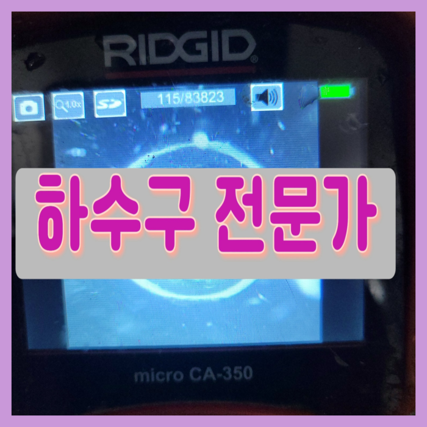
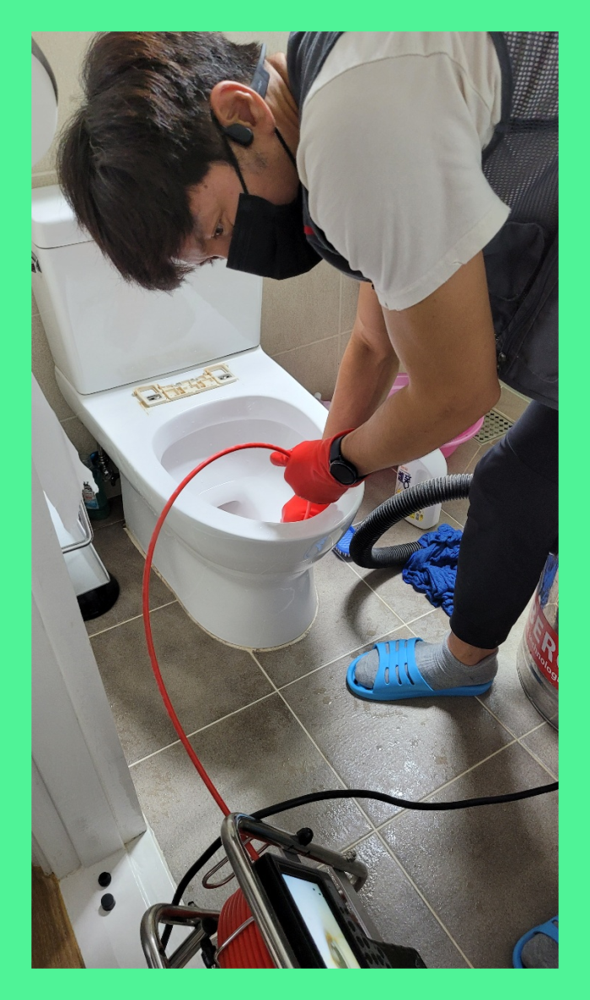
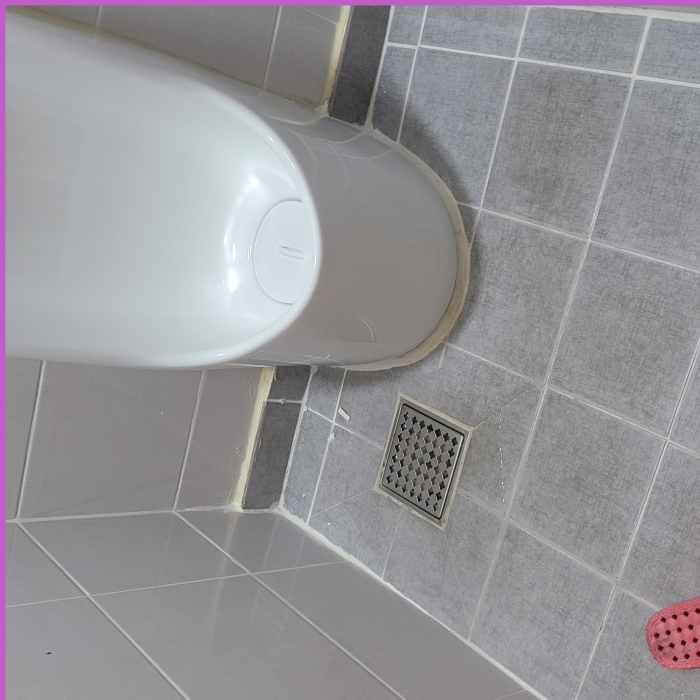
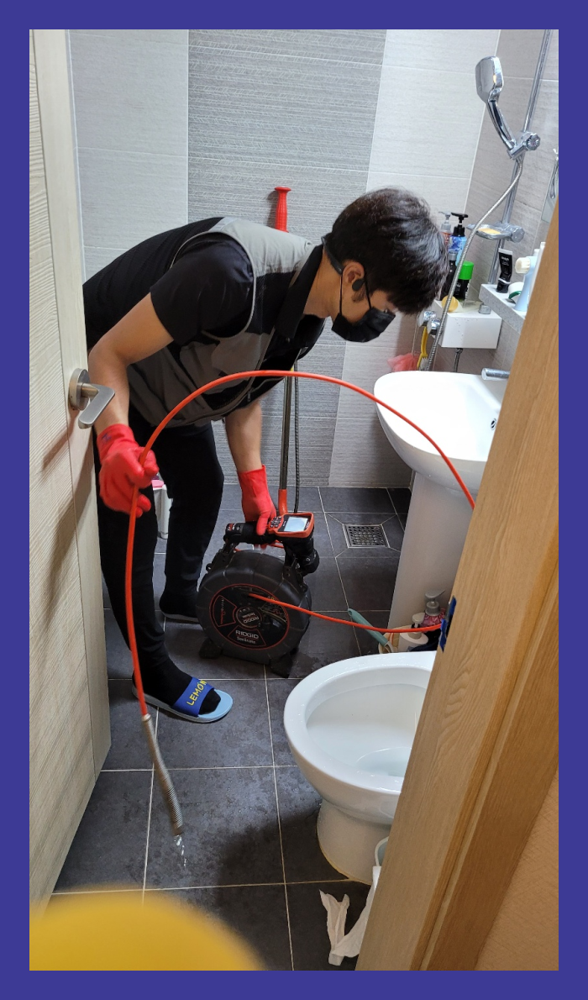
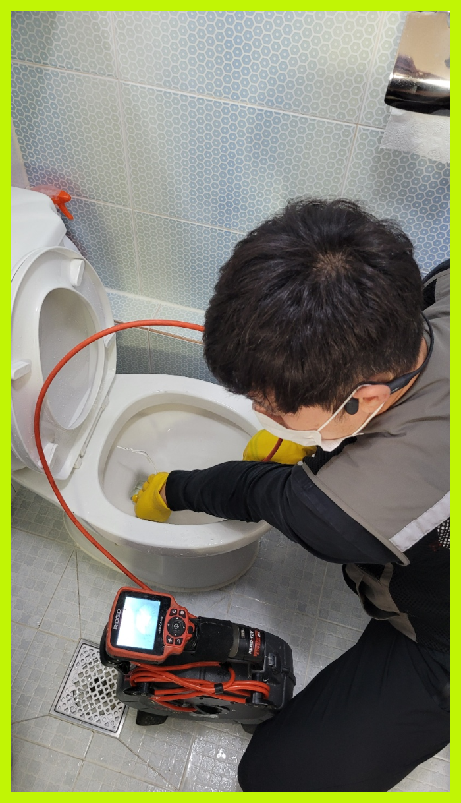
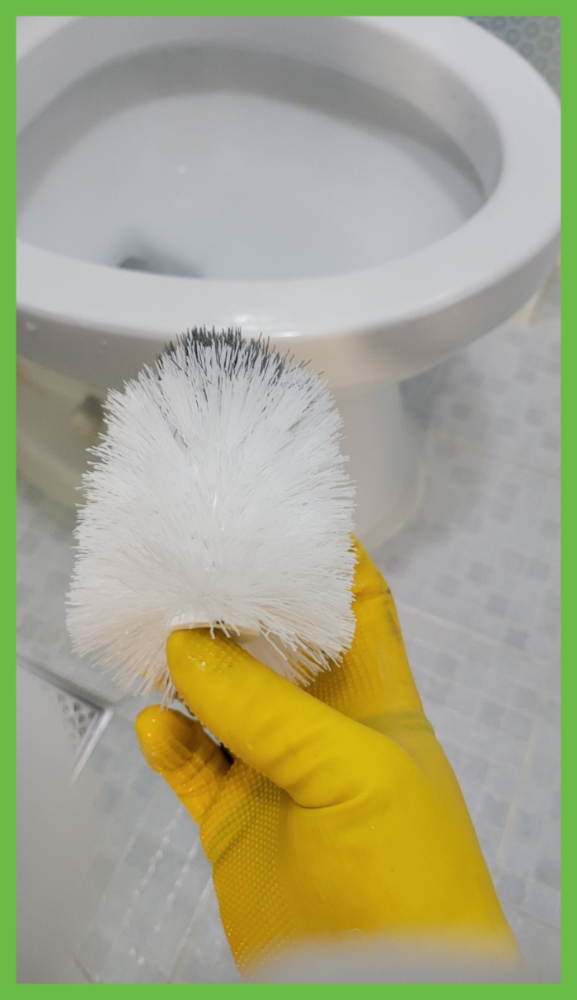
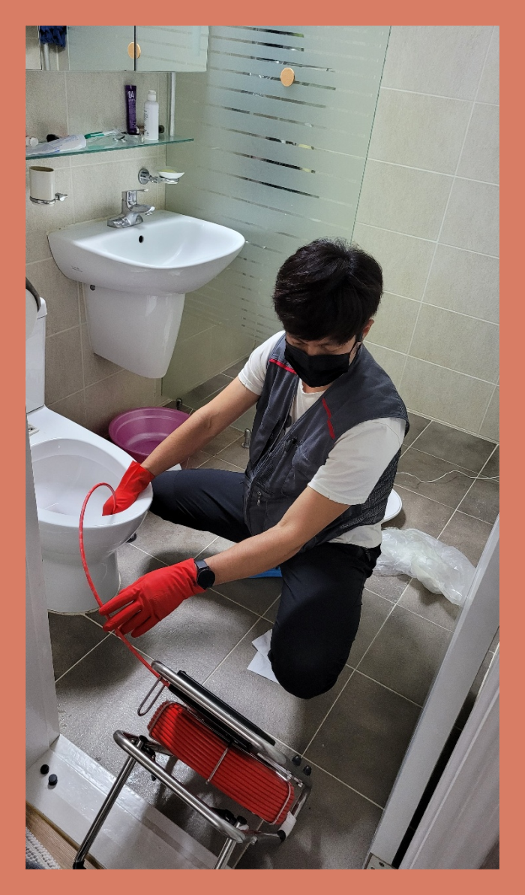

🏠 평택 대변기막힘 안중 포승 대변기 수리 역류 오수관 뚫는곳
평택 싱크대막힘 전문 시공 후기

📋 작업 개요
- 위치: 평택
- 서비스 유형: 싱크대막힘, 변기막힘, 하수구막힘, 배관막힘, 누수수리, 역류해결, 뚫는업체, 배관청소
- 작업 일시: 2023. 12. 2. 23:26
- 업체명: 하수구수사대 (010-5615-2118)
🔍 문제 상황
안녕하세요^^
설비전문업체 "하수구수사대"를 찾아주셔서 고맙습니다.
상가를포함한 어느현장이든 배수관가 존재합니다.막힌다면 배수관을쓸수 없게되는데요.보통의때처럼 이용하시다가 역류하게되면 물사용이 불가능해져요.이같은증상들로인해 답답한마음만 늘어나고 영업을해야한다면 경제적으로 엄청난손해가 일어나게되죠.
저희는 하수도나 배관에서 문제가 발생되었을 때 신속하게 현장으로 출동해 명확한 원인을 파악하여 꼼꼼하고 세심하게 작업을 해결해 나갑니다.

🔎 원인 분석
💡 전문가 진단: 평택 대변기막힘 안중 포승 대변기 수리 역류 오수관 뚫는곳
평택 대변기막힘 안중 포승 대변기 수리 역류 오수관 뚫는곳
문제가 발생하면 빠른시간에 출장 작업이 가능한 배출관업체와 최신장비를 갖춘 업체를 똑똑하게 선정하셔야합니다. 배관 초입을 비롯하여 배관 내부에 이르기까지 세세하게 보는게 가능한 배관내시경이 기본장비인데 이 장비조차 없는 업체들이 있으지 조심하세요.
보이지 않는 곳도 섣불리 작업을 했다가 오히려 더 큰 문제를 만들어서 더 큰 피해를 만들게 될 수도 있기 때문에 절대로배수구 함부로 건드리지 말아야 합니다. 구조를 제대로 알지 못하고 손을 대어 더 큰 문제가 발생하는 사례들을 많이 생겨납니다.
심각하게 막힌 현장은 기본장비로는 소용이 없어서 다른 방법을 진행해야 하는데 이럴때 주로 사용하는 것이 샤프트장비입니다. 배수구 장비는 이물질을 단순히 뚫어내기보단 이물질을 분쇄하는 방식으로 최근에 많이 사용하고 있는 방식입니다.
믿고 부른 배수업체가 제대로 뚫었다면서 철수했는데 얼마 지나지 않아서 똑같은 증상이 재발했다는 경우도 어렵지 않게 봅니다. 양심적인 업체였다면 이럴 때 당연히 다시 가서 뚫어주어야만 하는 것입니다.

🔧 작업 과정
이와 같은 퇴수막힘으로 역류 현상이 계속 발생하게 된다면 아래층 누수가 이어질 수 있기 때문에 시급히 해결해야 되는 상황이라고 할 수 있습니다. 퇴수막힘을 뚫는 작업에서 가장 중요한 것은 막힌 위치와 원인을 정확하게 파악을 하는 것입니다.
배출구뚫는 작업을 진행후 이물질이 다 올라온 것을 확인하고 나서 배수가 원활하게 이루어지는지 마지막 과정으로 점검하였고, 오래된 배출구이기 때문에 고객님께서 필요하시면 배관 청소까지 진행 도와드리겠다고 하였습니다.
배출구 배관안쪽에 이물들이 상당량 쌓여있지않거나 배수관겉에 소량 있다면 개선되는것은 사실이겠으나 안전하지못하고 또다른문제로 불거질수있으니 적절치못한조치들은 자제해주세요.
연락하신곳이 결점이있다면 배수 뚫지도않고 손을놔버리거나 재발의가능성이있는채로 돌아가게됩니다. 선택하셔야할때 견적가도 확인해야하는데요.대부분의의뢰자는 비교적싼곳에 마음이가실겁니다.
스스로해결이되는 상황이였으면 퇴수구 전문기사는있지도 않았을겁니다.배관에있는 석회들은 물에는녹지못하고 안타깝지만 시간이가면갈수록 지속적으로 누적되어서 상황이심각해지게됩니다.
저희는 내시경카메라라는 장비로 배관 깊게 들어가 자리를 잡고 관로탐지기를 사용해 바깥에서도 땅속에 숨은 배관을 찾아내 이물질을 제거해 드리고 있어요
저희 포스팅을 읽으시는 고객님들도 아시겠지만, 그동안 소개 드린 출동 사례 또한 매우 다양하기에 이를 바탕으로하수막힘 상담 연락을 주신다면 빠르고 친절한 상담 도와드리겠습니다.
어떤 문제든 당황하지 않고 확실하게 뚫어드릴 수 있는데요, 많은 분들이 믿고 맡겨주신 만큼 최선을 다해 최상의 결과를 보여드리겠습니다. 변기는 아무런 이유 없이 막히지 않습니다.


✅ 작업 완료
퇴수구막힘으로 인한 불편은 대부분 비슷하지만 정작 불편을 초래한 원인에는 차이가 있기 때문에 이를 제거하고 수습하는 방법도 상이합니다.
#하수구막힘 #하수구뚫음 #하수구역류 #씽크대막힘 #싱크대역류 #오수관막힘 #하수구청소 #욕실하수구막힘 #변기막힘 #하수구뚫는비용 #싱크대수리 #화장실막힘




⚠️ 베란다 누수 및 방수 관리 방법
- ✅ 비가 많이 올 때 창틀 주변이나 아래층 천장에 얼룩이 생기는지 정기적으로 확인해 보세요.
- ✅ 우수관 주변 실리콘 마감이 들뜨거나 깨진 틈새가 있는지 손상 여부를 수시로 체크하세요.
- ✅ 베란다 바닥 타일의 줄눈(메지)이 소실되면 그 틈으로 물이 침투하여 누수가 유발됩니다.
- ✅ 누수 의심 증상 발견 시 방치하면 아래층 손실이 커지므로 즉시 전문가의 진단을 받으십시오.
💡 핵심 정리
- 확실한 장비 작업(내시경 점검 및 샤프트 스케일링)으로 원인을 뿌리 뽑습니다.
- 작업 후 1년 이내에 동일한 부위 재발 시 100% 무상 A/S 서비스를 보장합니다.
- 서울 · 경기 · 인천 전 지역에 24시간 언제든 긴급 출동할 수 있도록 항시 대기 중입니다.
❓ 자주 묻는 질문 (FAQ)
🚨 평택 싱크대막힘 문제로 고민이신가요?
정확한 원인 진단과 확실한 시공으로 재발 없는 해결을 약속드립니다.
24시간 긴급 출동 | 서울 · 경기 · 인천 전지역 | 1년 내 재발 시 무상 A/S